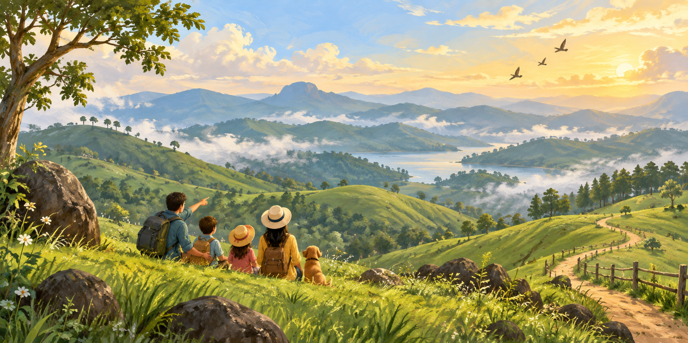
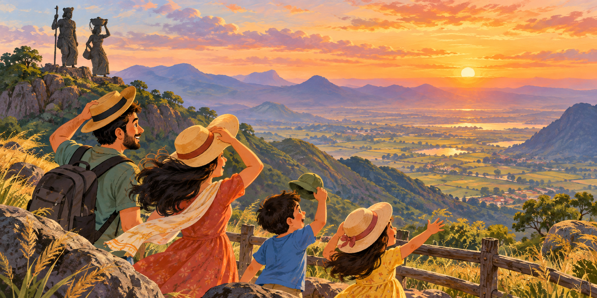
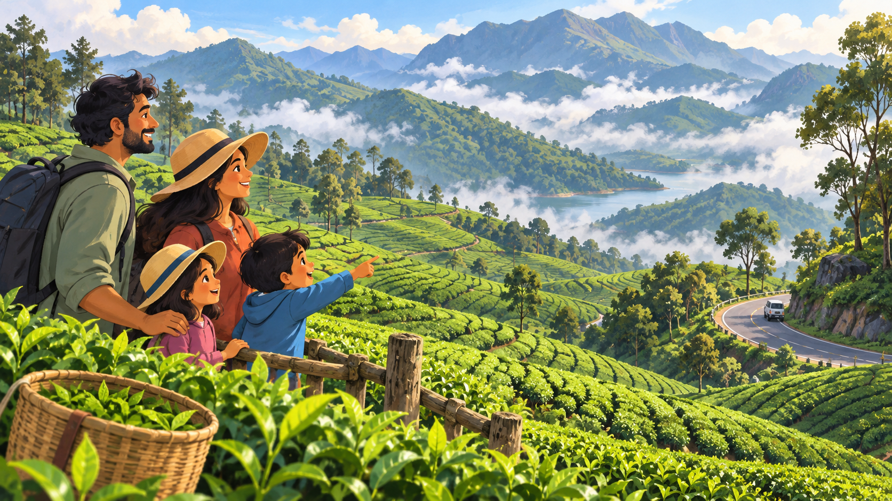
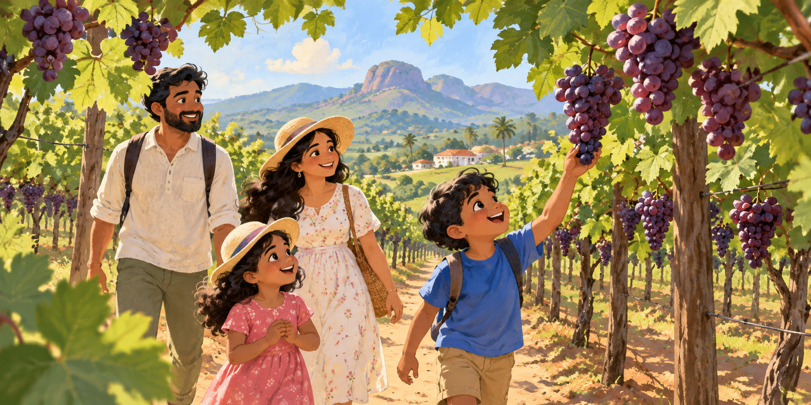
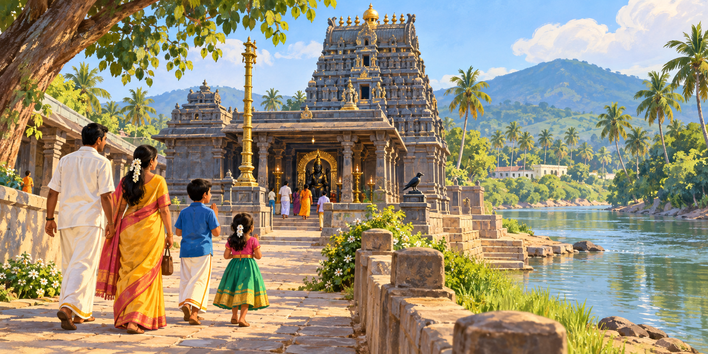

Day 1 · Vagamon
Friday · arrival
5:00 PM
Check in at Vagamon
Settle into the resort and freshen up.
5:30–6:30
Vagamon Meadows / Mottakunnu
Open grassland for family photos and kids’ play time.
FAMILY TIME6:30–7:00
Sunset & scenic views
Weather permitting.
7:00 PM
Resort evening
Dinner, campfire and kids’ games if available.
Day 2 · Vagamon
Saturday8:00 AM
Breakfast at resort
9:00–11:15
Vagamon Adventure Park
Pick 2–3 activities: zipline, sky cycling, rope course, ATV, climbing, trampoline or archery.
CHECK AGE / HEIGHT11:30–12:30
Pine Forest / Pine Valley
Easy walk and family photos.
12:30–1:30
Lunch
2:00–3:15
Vagamon Lake boating
Pedal or row boats for the family.
3:30–6:30
Meadows, viewpoint & sunset
A relaxed afternoon driven by energy and weather.
6:30 PM
Return to resort
Dinner, campfire / kids’ games.
Day 3 · Transition
Sunday
9:00–9:45
Breakfast & checkout prep
10:00–11:00
Pine Valley / Lower Pine Forest
Or swap for a nearby viewpoint if already covered.
11:15–12:15
Kolahalamedu viewpoint
Relaxed mountain views.
12:15–2:00
Lunch, checkout & depart Vagamon
5:00–8:00
Ramakkalmedu evening
Check in → viewpoint → Kuravan & Kurathi statue → sunset over Cumbum Valley → dinner.
KEEP IT RELAXEDDay 4 · Cumbum & Megamalai
Monday
✓ Updated plan: the Cumbum Grape Garden comes after Megamalai, on the return.
9:00–10:30
Cumbum Valley scenic drive
A leisurely drive through farms and agricultural land.
10:30–12:00
Suruli Falls
Waterfall views, short walks and family photos.
12:00–1:00
Lunch
1:00–2:00
Drive towards Megamalai
2:00–4:15
Megamalai tea estate & viewpoint
Plantation scenery, Western Ghats views and photos.
4:15–5:00
Megamalai scenic drive
5:00–5:35
Descend towards Cumbum
5:35–6:15
Cumbum Grape Garden
Visit the grape-growing area and see how grapes are cultivated.
UPDATED ORDER
☀
Day-of checkConfirm Megamalai access, hill-road conditions and Suruli Falls safety before leaving.
Day 5 · Kuchanur
Tuesday · onward
10:00–11:15
Kuchanur Saneeswarar Temple
Darshan and temple visit.
11:15–12:15
Surabi River
Riverside walk, photos and family time. Swimming is not planned.
12:15–1:00
Lunch
1:00–2:00
Continue onward journey
♥
Family-first tripTake breaks freely—the nicest memories are usually between the planned stops.
Live road route
Tap any leg to open live traffic, the current distance and journey time in Google Maps.
⌂
Bond Resorts, VagamonStay base · 16–18 October
⌂
Green Park Hotel, CumbumStay base · 18–20 October
Times shown are planning estimates. The live directions button checks the actual traffic and route when you travel.